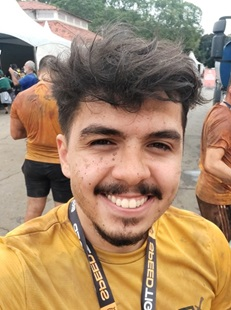
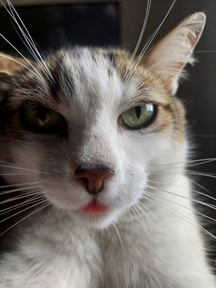
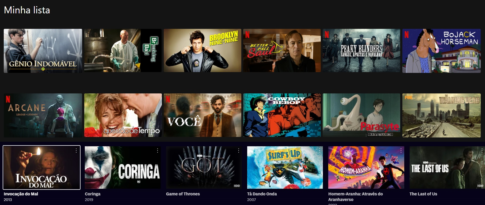
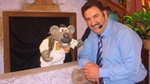

Aqui está a minha foto e o meu avatar (que também é meu gato).
 Nesta disciplina gostaria de aprender a fazer coisas assim:
Detecção de gestos
Jogos interativos
Algumas das minhas séries e filmes favoritos
Alguns audios marcantes da TV Brasileira
RATINHOOO
IIIIIIHAAA
RAPAZ
Aqui alguns conteudos dos meus gatos
Uma gata tecnológica